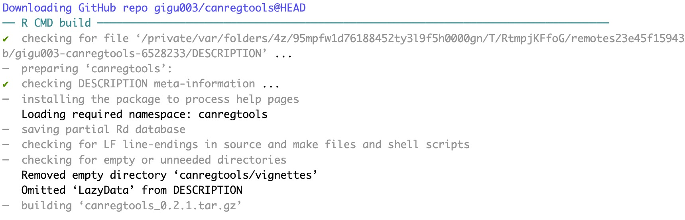
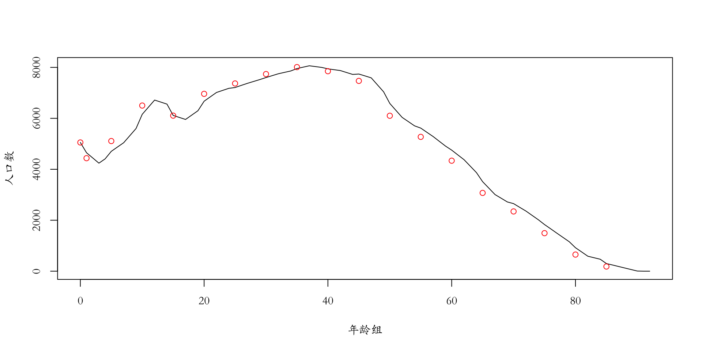
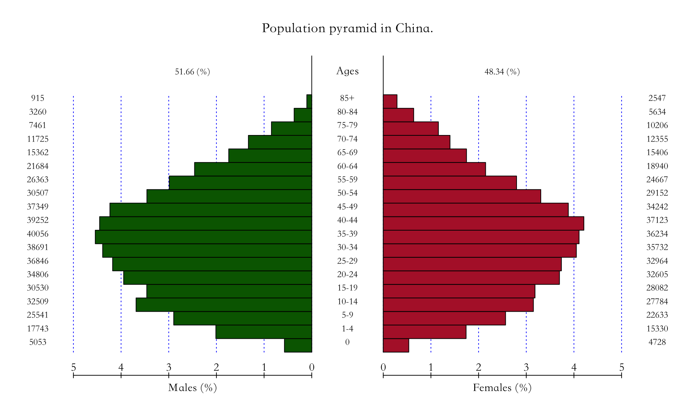
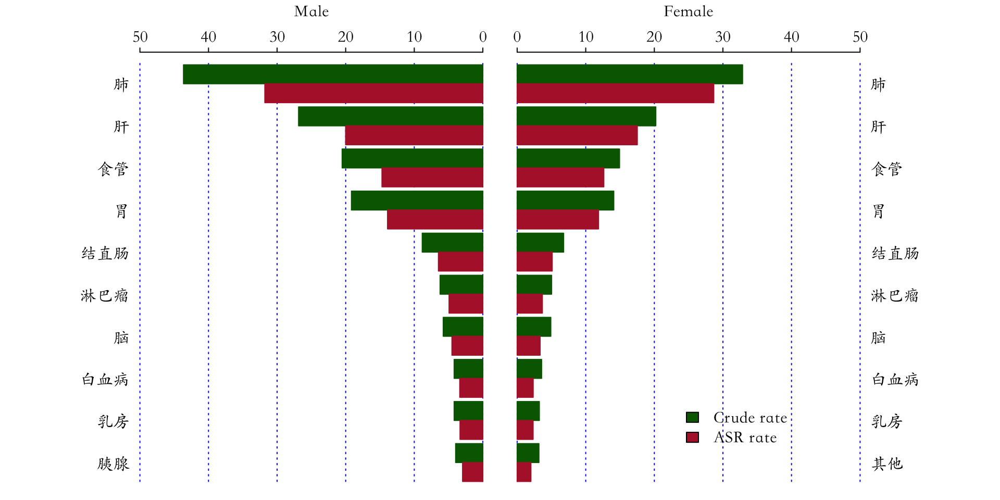
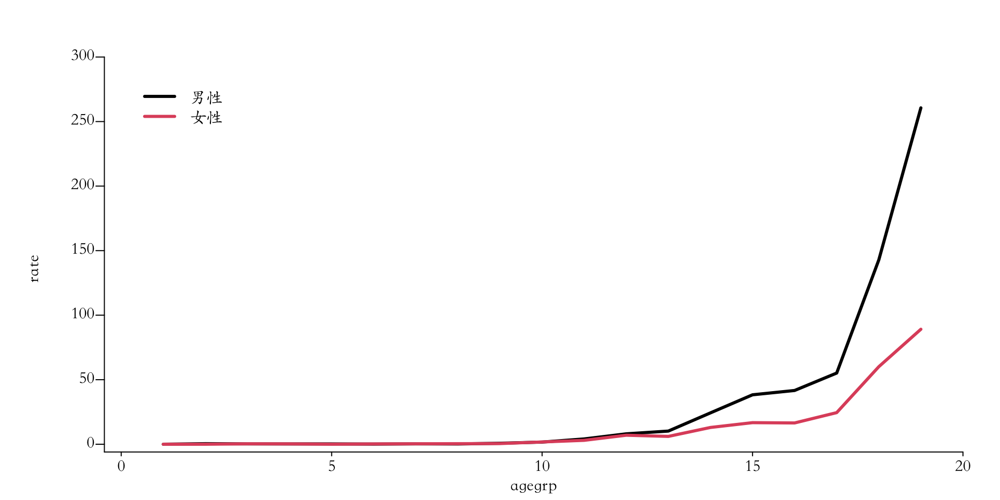
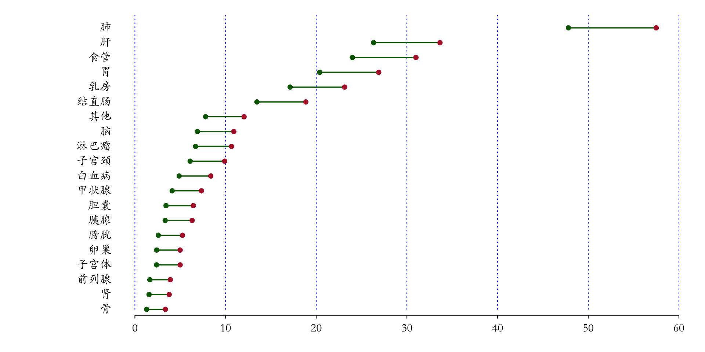

flowchart TD A[(工具)] --> B(R语言) A --> C(SAS) A --> D(SPSS) A --> E(STATA) A --> F(Python)
R包: canregtools
肿瘤登记(逻辑核查、数据分析、数据可视化、肿瘤报告)
👨⚕️陈琼，博士，副主任医师
🏥河南省癌症中心 河南省肿瘤医院
Saturday Sep 23, 2023
实际需求
肿瘤登记是我国恶性肿瘤监测的一项常规工作内容，它定期收集人群中恶性肿瘤发病、死亡及生存数据并进行统计分析，从而为肿瘤防控工作提供参考数据。
- 质量控制（五大洲发病率、年度数据质量审核）
- 统计分析（粗率、标化率等）
- 撰写报告（肿瘤登记年报）
- 科技论文
缺少工具
目前还没有一款公开发布的肿瘤登记数据分析工具来方便快捷的实现上述功能。
软件平台选择
R语言是一种用于统计分析和数据可视化的编程语言和环境。它是一个开源的、免费的软件，广泛用于统计学、数据分析、数据挖掘和生物信息学等领域。
软件平台选择
- 免费
- 便于分享(CRAN, github)
- R包
- 跨平台(Windows、macOS、Linux、unix)

功能设计
%%| fig-align: center flowchart TD A[(肿瘤登记R包)] --> B(数据读入与转换) A --> C(数据处理) A --> D(质量控制) A --> E(统计分析) A --> F(可视化) A --> G(报表) B --> b1(常规报告) B --> b2(寿命表) C --> c1(标准转换) C --> c2(分类) C --> c3(语种) C --> c4(人口数据)
flowchart TD A[(统计分析)] --> B(统计计算) A --> C(统计学检验) B --> b1(寿命表) B --> b2(截缩率) B --> b3(标化率) B --> b4(年龄别率)
flowchart TD A[(可视化)] --> B(人口金字塔) A --> C(线图) A --> D(双向条形图) A --> E(玫瑰图) A --> F(哑铃图) A --> G(癌症地图)
包的安装
可以通过devtools安装
也可以通过remotes包进行安装
读取数据
```{r}
library(canregtools)
file <- system.file("extdata", "411721.xls", package = "canregtools")
data <- read_canreg(file)
data
```2200 cases were read from FB sheet.1470 cases were read from SW sheet.$areacode
[1] "411721"
$county
[1] ""
$area_type
[1] ""
$location
[1] ""
$year
[1] 2016
$FBcases
# A tibble: 2,200 × 20
registr sex age birthda inciden topo morp beha grad basi trib
<chr> <chr> <chr> <date> <date> <chr> <chr> <chr> <chr> <chr> <chr>
1 174117… 2 72 1943-10-04 2016-04-11 C00.9 8070 3 9 7 01
2 184117… 1 91 1925-02-02 2016-09-13 C01.9 8070 3 9 7 01
3 184117… 1 74 1941-09-16 2016-04-14 C01.9 8070 3 9 7 01
4 194117… 1 61 1954-08-13 2016-06-15 C02.9 8070 3 9 7 01
5 174117… 2 8 2008-03-31 2016-05-05 C02.9 9591 3 9 7 01
6 164117… 1 60 1955-11-22 2016-07-04 C03.9 8070 3 9 7 01
7 184117… 1 80 1935-08-12 2016-04-03 C03.9 8070 3 9 7 01
8 204117… 1 71 1944-06-13 2016-03-02 C05.1 8070 3 9 7 01
9 174117… 1 65 1951-03-25 2016-12-28 C05.9 8010 3 3 7 01
10 174117… 1 63 1953-01-08 2016-05-10 C05.9 8070 3 9 7 01
# ℹ 2,190 more rows
# ℹ 9 more variables: dlc <dttm>, deathda <dttm>, caus <chr>, marri <chr>,
# status <chr>, reportd <dttm>, treatment <chr>, firsttreat <chr>,
# icd10 <chr>
$SWcases
# A tibble: 1,470 × 10
registr sex age birthda topo morp beha inciden deathda icd10
<chr> <chr> <chr> <date> <chr> <chr> <chr> <date> <date> <chr>
1 1641172… 1 65 1951-05-28 C02.9 8052 3 2012-09-03 2016-07-13 C02.9
2 1741170… 1 75 1941-10-01 C02.9 8070 3 2014-04-28 2016-12-10 C02.9
3 1741170… 1 67 1949-11-04 C03.0 8070 3 2015-10-04 2016-12-15 C03.0
4 1741170… 1 68 1948-01-15 C04.9 8070 3 2015-09-11 2016-07-29 C04.9
5 1741170… 1 63 1953-04-08 C06.0 8050 3 2012-11-08 2016-11-09 C06.0
6 1741170… 1 67 1948-12-12 C06.9 8070 3 2015-05-06 2016-07-23 C06.9
7 1741170… 1 66 1950-10-10 C06.9 8070 3 2015-04-08 2016-11-10 C06.9
8 1741170… 1 67 1949-03-10 C07.9 8430 3 2014-06-10 2016-06-06 C07
9 1741170… 1 65 1950-07-07 C07.9 8562 3 2015-10-02 2016-03-14 C07
10 1741170… 2 84 1931-12-02 C09.9 8070 3 2016-05-16 2016-12-22 C09.9
# ℹ 1,460 more rows
$POP
# A tibble: 38 × 4
year sex agegrp rks
<int> <int> <fct> <dbl>
1 2016 1 0 5053
2 2016 1 1 17743
3 2016 1 5 25541
4 2016 1 10 32509
5 2016 1 15 30530
6 2016 1 20 34806
7 2016 1 25 36846
8 2016 1 30 38691
9 2016 1 35 40056
10 2016 1 40 39252
# ℹ 28 more rows
attr(,"class")
[1] "canreg" "list" 常用数据处理函数
年龄重新分组–cutage()
cutage( x,
method = “distance”,
length = 5,
maxage = 85,
sep_zero = TRUE,
breaks = c(seq(0, 85, 5)),
labels = NULL,
lang = “cn”,
label_tail = NULL,
right = FALSE )
常用数据处理函数
年龄重新分组–cutage()
```{r}
library(canregtools)
age <- sample(0:101, 200, replace = TRUE)
agegrp <- cutage(age, method = "distance", length = 5, maxage = 60, sep_zero = TRUE)
as.data.frame(table(agegrp))
``` agegrp Freq
1 0 岁 0
2 1-4 岁 6
3 5-9 岁 15
4 10-14 岁 10
5 15-19 岁 7
6 20-24 岁 11
7 25-29 岁 10
8 30-34 岁 11
9 35-39 岁 8
10 40-44 岁 8
11 45-49 岁 9
12 50-54 岁 10
13 55-59 岁 14
14 60+ 岁 81```{r}
library(canregtools)
age <- sample(0:101, 200, replace = TRUE)
agegrp <- cutage(age, method = "interval", breaks = seq(0, 85, 5),lang = "en")
as.data.frame(table(agegrp))
``` agegrp Freq
1 0-4 yrs 12
2 5-9 yrs 8
3 10-14 yrs 7
4 15-19 yrs 7
5 20-24 yrs 7
6 25-29 yrs 4
7 30-34 yrs 7
8 35-39 yrs 10
9 40-44 yrs 16
10 45-49 yrs 14
11 50-54 yrs 7
12 55-59 yrs 7
13 60-64 yrs 10
14 65-69 yrs 14
15 70-74 yrs 7
16 75-79 yrs 10
17 80-84 yrs 10
18 85+ yrs 43常用数据处理函数
扩充人口数据– expand_age_pop()
expand_age_pop(x, method = “linear”)
x Vector, population for each age group.
method Method for expanding, options are ‘linear’, ‘constant’, ‘periodic’, or ‘natural’. Default is ‘linear’.
常用数据处理函数
扩充人口数据– expand_age_pop()
```{r}
#| output-location: slide
age <- c(0, 1, seq(5, 85, 5))
pops <- c(5053, 17743, 25541, 32509, 30530, 34806, 36846, 38691, 40056,
39252, 37349, 30507, 26363, 21684, 15362, 11725, 7461, 3260, 915)
pop <- pops
pop[2] <- pop[2]/4
pop[3:19] <- pop[3:19]/5
#把人口数据从5岁组扩充至1岁组
age2 <- expand_age_pop(pops)
#绘制拟合曲线
par(family="STKaiti")
plot(age2, pch = 19, xlab= "年龄组", ylab = "人口数", type = "l")
lines(age, pop, type = "p", col="red")
```常用数据处理函数

常用数据处理函数
ICDO3转换ICD10编码
常用数据处理函数
肿瘤的分类
常用数据处理函数
肿瘤的分类– classify_icd10
classify_icd10(icd10, type = “big”, lang = “cn”)
常用数据处理函数
肿瘤的分类– classify_icd10
c1 Freq
1 排除 0
2 口腔 17
3 鼻咽 10
4 食管 241
5 胃 207
6 结直肠 141
7 肝 263
8 胆囊 42
9 胰腺 41
10 喉 13
11 肺 463
12 其他胸腔器官 5
13 骨 19
14 皮肤黑色素瘤 6
15 乳房 176
16 子宫颈 69
17 子宫体 31
18 卵巢 31
19 前列腺 23
20 睾丸 3
21 肾 22
22 膀胱 33
23 脑 77
24 甲状腺 49
25 淋巴瘤 75
26 白血病 57
27 其他 86 c1 Freq
1 Excluded 0
2 Lip 1
3 Tongue 3
4 Mouth 5
5 Salivary glands 4
6 Tonsil 1
7 Other oropharynx 2
8 Nasopharynx 10
9 Hypopharynx 1
10 Pharynx unspecified 0
11 Esophagus 241
12 Stomach 207
13 Small intestine 13
14 Colon 74
15 Rectum 63
16 Anus 4
17 Liver 263
18 Gallbladder etc. 42
19 Pancreas 41
20 Nose,sinses etc. 4
21 Larynx 13
22 Trachea, bronchus & lung 463
23 Other thoracic organs 5
24 Bone 19
25 Melanoma of skin 6
26 Other skin 16
27 Mesothelioma 0
28 Kaposi sarcoma 0
29 Connective &soft tissue 11
30 Breast 176
31 Vulva 3
32 Vagina 0
33 Cervix uteri 69
34 Corpus uteri 23
35 Uterus unspecified 8
36 Ovary 31
37 Other female genital organs 4
38 Placenta 5
39 Penis 4
40 Prostate 23
41 Testis 3
42 Other male genital organs 0
43 Kidney 17
44 Renal pelvis 1
45 Ureter 2
46 Bladder 33
47 Other urinary organs 2
48 Eye 2
49 Brain,nervous system 77
50 Thyroid 49
51 Adrenal glad 4
52 Other endocrine 2
53 Hodgkin lymphoma 3
54 Non-Hodgkin lymphoma 55
55 Immunoproliferative diseases 0
56 Multiple myeloma 17
57 Lymphoid leukemia 10
58 Myeloid leukemia 39
59 Leukemia unspecified 8
60 Other and unspecified 18常用数据处理函数
儿童肿瘤的分类– classify_childhood
classify_childhood(topo, morp, type = “main”, lang = “cn”)
常用数据处理函数
儿童肿瘤的分类– classify_childhood
```{r}
fbcases <- data$FBcases
fbcases <- fbcases[fbcases$age <= 14,]
classify_childhood(fbcases$topo, fbcases$morp, lang = "cn")
classify_childhood(fbcases$topo, fbcases$morp, type = "sub", lang = "en")
```[1] XII. 其他和未特指 未分类或原位癌;
[3] V. 视网膜母细胞瘤 XI. 其他恶性上皮和黑色素瘤
[5] XII. 其他和未特指 II. 淋巴瘤
13 Levels: I. 白血病 II. 淋巴瘤 III. 中枢神经系统 ... 未分类或原位癌;
[1] XIIb. Other unspecified malignant tumors
[2] Not Classified by ICCC or in situ
[3] V. Retinoblastoma
[4] XIb. thyroid carcinomas
[5] XIIb. Other unspecified malignant tumors
[6] IIb. Non-Hodgkin except BL
49 Levels: Ia. Lymphod leukemias Ib. Acute myeloid Ic. CMD ... Not Classified by ICCC or in situcounts
counts
2200 cases were read from FB sheet.1470 cases were read from SW sheet.[1] "Processing data: 2200 FBcases."
[1] "Processing data: 1470 SWcases."
[1] "Processing POP data of year: 2016"
# A tibble: 208 × 11
year sex agegrp icd_cat fbs sws mv ub sub dco rks
<dbl> <fct> <fct> <fct> <int> <int> <int> <int> <int> <int> <int>
1 2016 男性 0-14 岁 口腔 0 0 0 0 0 0 80846
2 2016 男性 15-39 岁 口腔 1 0 1 0 1 0 180929
3 2016 男性 40-64 岁 口腔 5 2 5 0 3 0 155155
4 2016 男性 65+ 岁 口腔 7 8 7 0 3 0 38723
5 2016 男性 0-14 岁 鼻咽 0 0 0 0 0 0 80846
6 2016 男性 15-39 岁 鼻咽 2 0 2 0 2 0 180929
7 2016 男性 40-64 岁 鼻咽 2 6 2 0 2 0 155155
8 2016 男性 65+ 岁 鼻咽 3 1 3 0 3 0 38723
9 2016 男性 0-14 岁 食管 0 0 0 0 0 0 80846
10 2016 男性 15-39 岁 食管 1 0 1 0 0 0 180929
# ℹ 198 more rows年龄别率
# A tibble: 208 × 6
year sex icd_cat agegrp cases rate
<dbl> <fct> <fct> <fct> <int> <dbl>
1 2016 男性 口腔 0-14 岁 0 0
2 2016 男性 口腔 15-39 岁 0 0
3 2016 男性 口腔 40-64 岁 2 1.29
4 2016 男性 口腔 65+ 岁 8 20.7
5 2016 男性 鼻咽 0-14 岁 0 0
6 2016 男性 鼻咽 15-39 岁 0 0
7 2016 男性 鼻咽 40-64 岁 6 3.87
8 2016 男性 鼻咽 65+ 岁 1 2.58
9 2016 男性 食管 0-14 岁 0 0
10 2016 男性 食管 15-39 岁 0 0
# ℹ 198 more rows质量控制报表
# A tibble: 2 × 7
year sex mi mv ub sub dco
<dbl> <fct> <dbl> <dbl> <dbl> <dbl> <dbl>
1 2016 男性 0.78 65.7 0.67 57.0 2.61
2 2016 女性 0.54 76.2 0.3 59.4 1.88# A tibble: 52 × 8
year sex icd_cat mi mv ub sub dco
<dbl> <fct> <fct> <dbl> <dbl> <dbl> <dbl> <dbl>
1 2016 男性 口腔 0.77 100 0 53.8 0
2 2016 男性 鼻咽 1 100 0 100 0
3 2016 男性 食管 0.81 86.0 0 80.9 2.55
4 2016 男性 胃 0.79 91.1 0 63.0 2.22
5 2016 男性 结直肠 0.6 95.8 0 29.2 1.39
6 2016 男性 肝 0.9 26.7 0 9.44 4.44
7 2016 男性 胆囊 0.81 93.8 0 12.5 0
8 2016 男性 胰腺 0.74 22.2 0 66.7 3.7
9 2016 男性 喉 0.91 100 0 81.8 0
10 2016 男性 肺 0.85 52.5 0 89.4 2.5
# ℹ 42 more rows标化率
[1] "Processing data: 2200 FBcases."
[1] "Processing data: 1470 SWcases."
[1] "Processing POP data of year: 2016"
# A tibble: 52 × 13
year sex icd_cat no_cases cr cr_lower cr_upper asr_segi asr_lower_segi
<dbl> <fct> <fct> <int> <dbl> <dbl> <dbl> <dbl> <dbl>
1 2016 Male Oral ca… 13 2.85 1.52 4.88 2.73 1.34
2 2016 Male Nasopha… 7 1.54 0.62 3.17 1.16 0.47
3 2016 Male Esophag… 157 34.5 29.3 40.3 30.6 25.5
4 2016 Male Stomach 135 29.6 24.8 35.1 24.9 20.6
5 2016 Male Colon-r… 72 15.8 12.4 19.9 12.6 9.79
6 2016 Male Liver 180 39.5 33.9 45.7 31.8 27.0
7 2016 Male Gallbla… 16 3.51 2.01 5.7 2.7 1.54
8 2016 Male Pancreas 27 5.93 3.9 8.62 5.03 3.2
9 2016 Male Larynx 11 2.41 1.21 4.32 1.78 0.88
10 2016 Male Lung 320 70.2 62.7 78.4 61.0 53.8
# ℹ 42 more rows
# ℹ 4 more variables: asr_upper_segi <dbl>, asr_china <dbl>,
# asr_lower_china <dbl>, asr_upper_china <dbl>标化率
[1] "Processing data: 2200 FBcases."
[1] "Processing data: 1470 SWcases."
[1] "Processing POP data of year: 2016"
# A tibble: 11 × 12
year icd_cat no_cases cr cr_lower cr_upper asr_segi asr_lower_segi
<dbl> <fct> <int> <dbl> <dbl> <dbl> <dbl> <dbl>
1 2016 Lip,mouth an… 27 3.06 2.02 4.45 2.34 1.53
2 2016 Digestive sy… 949 108. 101. 115. 81.5 76.3
3 2016 Respiratory … 515 58.4 53.4 63.7 43.6 39.8
4 2016 Bone,cartila… 58 6.58 4.99 8.5 5.31 3.99
5 2016 Breast cancer 176 20.0 17.1 23.1 15.1 12.9
6 2016 Female repro… 143 16.2 13.7 19.1 12.5 10.5
7 2016 Male reprodu… 30 3.4 2.29 4.86 3.1 2.06
8 2016 Urinary syst… 55 6.24 4.7 8.12 5.14 3.8
9 2016 Eyes,brain,t… 94 10.7 8.61 13.0 9 7.15
10 2016 Hemopoietic … 113 12.8 10.6 15.4 11.2 9.09
11 2016 Other 40 4.54 3.24 6.18 3.49 2.47
# ℹ 4 more variables: asr_upper_segi <dbl>, asr_china <dbl>,
# asr_lower_china <dbl>, asr_upper_china <dbl>简略寿命表
```{r}
#| output-location: slide
px <- c(
20005, 86920, 102502, 151494, 182932,
203107, 240289, 247076, 199665, 163820,
145382, 86789, 69368, 51207, 39112, 20509,
12301, 6586, 1909
)
dx <- c(
156, 58, 47, 49, 48, 68, 120, 162, 160, 294,
417, 522, 546, 628, 891, 831, 926, 731, 269
)
mx <- dx / px
lt <- lt(mx, sage = 0, agegrp = 5, sex = "total")
lt$ex <- round(lt$ex, 2)
lt
```简略寿命表
age mx qx lx dx Lx Tx ex
1 0 0.0077980505 0.007741928 1.0000000 0.007741928 0.992803 75.704586 75.70
2 1 0.0006672803 0.002664799 0.9922581 0.002644169 3.962606 74.711783 75.29
3 5 0.0004585276 0.002290118 0.9896139 0.002266333 4.942630 70.749177 71.49
4 10 0.0003234452 0.001615971 0.9873476 0.001595525 4.932909 65.806547 66.65
5 15 0.0002623926 0.001311137 0.9857520 0.001292456 4.925658 60.873638 61.75
6 20 0.0003347989 0.001672650 0.9844596 0.001646657 4.918346 55.947980 56.83
7 25 0.0004993986 0.002494004 0.9828129 0.002451139 4.908182 51.029634 51.92
8 30 0.0006556687 0.003273193 0.9803618 0.003208913 4.894108 46.121452 47.05
9 35 0.0008013422 0.003999020 0.9771529 0.003907654 4.876386 41.227345 42.19
10 40 0.0017946527 0.008934780 0.9732452 0.008695732 4.845356 36.350959 37.35
11 45 0.0028683056 0.014243477 0.9645495 0.013738538 4.789775 31.505602 32.66
12 50 0.0060145871 0.029645010 0.9508110 0.028186800 4.686406 26.715827 28.10
13 55 0.0078710645 0.038625662 0.9226242 0.035636969 4.527592 22.029421 23.88
14 60 0.0122639483 0.059566493 0.8869872 0.052834716 4.308133 17.501829 19.73
15 65 0.0227807323 0.107998953 0.8341525 0.090087593 3.954552 13.193696 15.82
16 70 0.0405187966 0.184638766 0.7440649 0.137383221 3.390605 9.239144 12.42
17 75 0.0752784326 0.318795874 0.6066817 0.193407609 2.569230 5.848539 9.64
18 80 0.1109930155 0.438228382 0.4132740 0.181108418 1.631710 3.279309 7.93
19 85 0.1409114720 1.000000000 0.2321656 0.232165631 1.647599 1.647599 7.10简略寿命表–>完全寿命表
```{r}
lx <- c(
100000, 99498.39, 99294.62, 99173.88, 99047.59, 98840.46,
98521.16, 98161.25, 97636.99, 96900.13, 95718.96, 93930.91,
91463.21, 87131.41, 80525.02, 70907.59, 58090.75, 41630.48,
24019.33
)
lx <- lx / 100000
expand_lifetable(lx)
```$fitlx
[1] 1.000000e+00 9.949839e-06 9.943045e-06 9.937549e-06 9.933096e-06
[6] 9.929462e-06 9.926447e-06 9.923875e-06 9.921584e-06 9.919469e-06
[11] 9.917388e-06 9.915591e-06 9.913472e-06 9.910964e-06 9.908052e-06
[16] 9.904759e-06 9.901464e-06 9.897781e-06 9.893669e-06 9.889097e-06
[21] 9.884046e-06 9.878288e-06 9.872129e-06 9.865659e-06 9.858964e-06
[26] 9.852116e-06 9.845529e-06 9.838754e-06 9.831679e-06 9.824179e-06
[31] 9.816125e-06 9.807054e-06 9.797288e-06 9.786818e-06 9.775630e-06
[36] 9.763699e-06 9.751300e-06 9.737934e-06 9.723405e-06 9.707503e-06
[41] 9.690013e-06 9.670577e-06 9.649185e-06 9.625694e-06 9.599970e-06
[46] 9.571896e-06 9.540591e-06 9.506973e-06 9.471163e-06 9.433217e-06
[51] 9.393091e-06 9.352558e-06 9.308709e-06 9.260472e-06 9.206717e-06
[56] 9.146321e-06 9.076329e-06 8.998268e-06 8.911862e-06 8.816888e-06
[61] 8.713141e-06 8.601651e-06 8.480514e-06 8.349054e-06 8.206597e-06
[66] 8.052502e-06 7.885124e-06 7.705356e-06 7.513086e-06 7.308241e-06
[71] 7.090759e-06 6.863093e-06 6.621824e-06 6.366129e-06 6.095344e-06
[76] 5.809075e-06 5.503783e-06 5.184939e-06 4.853927e-06 4.512550e-06
[81] 4.163048e-06 3.808109e-06 3.450856e-06 3.094805e-06 2.743805e-06
[86] 2.401933e-06 2.073362e-06 1.762192e-06 1.472263e-06 1.206941e-06
[91] 9.689196e-07 7.600301e-07 5.811051e-07 4.319038e-07 3.111229e-07
[96] 2.164995e-07 1.450033e-07 9.309887e-08 5.704549e-08 3.319473e-08
$fitmx
[1] 1.151795e+01 6.830210e-04 5.529797e-04 4.481607e-04 3.659114e-04
[6] 3.036867e-04 2.591035e-04 2.309476e-04 2.131515e-04 2.098278e-04
[11] 1.812540e-04 2.137218e-04 2.529973e-04 2.938187e-04 3.324396e-04
[16] 3.327221e-04 3.720199e-04 4.155588e-04 4.622586e-04 5.108472e-04
[21] 5.827656e-04 6.236256e-04 6.555918e-04 6.789103e-04 6.947944e-04
[26] 6.688121e-04 6.884115e-04 7.193483e-04 7.630738e-04 8.201671e-04
[31] 9.245562e-04 9.963060e-04 1.069214e-03 1.143761e-03 1.221279e-03
[36] 1.270722e-03 1.371621e-03 1.493135e-03 1.636784e-03 1.803296e-03
[41] 2.007795e-03 2.214475e-03 2.437525e-03 2.675953e-03 2.928714e-03
[46] 3.275876e-03 3.529858e-03 3.773867e-03 4.014544e-03 4.262741e-03
[51] 4.324492e-03 4.699514e-03 5.195447e-03 5.821605e-03 6.581639e-03
[56] 7.681911e-03 8.637699e-03 9.648934e-03 1.071424e-02 1.183659e-02
[61] 1.287819e-02 1.418307e-02 1.562286e-02 1.720989e-02 1.895548e-02
[66] 2.100484e-02 2.306238e-02 2.526936e-02 2.764363e-02 3.021026e-02
[71] 3.263420e-02 3.578726e-02 3.937935e-02 4.346630e-02 4.810392e-02
[76] 5.398562e-02 5.967772e-02 6.596999e-02 7.292571e-02 8.061481e-02
[81] 8.911464e-02 9.851066e-02 1.088974e-01 1.203792e-01 1.330717e-01
[86] 1.471025e-01 1.626126e-01 1.797581e-01 1.987113e-01 2.196630e-01
[91] 2.428237e-01 2.684264e-01 2.967286e-01 3.280149e-01 3.626000e-01
[96] 4.008316e-01 4.430943e-01 4.898131e-01 5.414578e-01 5.414578e-01人口金字塔图
```{r}
#| output-location: slide
#| fig-height: 6
left <- c(
5053, 17743, 25541, 32509, 30530, 34806, 36846, 38691, 40056,
39252, 37349, 30507, 26363, 21684, 15362, 11725, 7461, 3260, 915
)
right <- c(
4728, 15330, 22633, 27784, 28082, 32605, 32964, 35732, 36234,
37123, 34242, 29152, 24667, 18940, 15406, 12355, 10206, 5634,
2547
)
agegrp <- c(
"0", "1-4", "5-9", "10-14", "15-19", "20-24", "25-29", "30-34",
"35-39", "40-44", "45-49", "50-54", "55-59", "60-64", "65-69",
"70-74", "75-79", "80-84", "85+"
)
pop <- data.frame(left = left, right = right, row.names = agegrp)
par(family="STKaiti", mar=c(0,0,0,0))
pyramid(pop, main = "Population pyramid in China.", csize = 0.8, cgap = 0.3)
```人口金字塔图

双向条形图
双向条形图
2200 cases were read from FB sheet.1470 cases were read from SW sheet.[1] "Processing data: 2200 FBcases."
[1] "Processing data: 1470 SWcases."
[1] "Processing POP data of year: 2016"
线图
线图
2200 cases were read from FB sheet.1470 cases were read from SW sheet.[1] "Processing data: 2200 FBcases."
[1] "Processing data: 1470 SWcases."
[1] "Processing POP data of year: 2016"
哑铃图
哑铃图
2200 cases were read from FB sheet.1470 cases were read from SW sheet.[1] "Processing data: 2200 FBcases."
[1] "Processing data: 1470 SWcases."
[1] "Processing POP data of year: 2016"
下一步计划
- 登记处合并运算功能
- 基于Rmarkdown年度报告撰写模板
- 基于Rmarkdown质量控制报告模板
- 统计地图功能
- 肿瘤登记质量控制监测面板
谢 谢 关 注 !
陈 琼 博士
chenq08@126.com
https:://www.chenq.site/qsight/
R package: canregtools